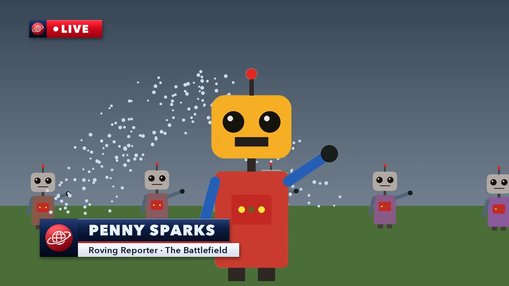

A plain wall instead of a green screen. TV-style titles, a news intro with the pips, a villain's voice and credits. And every creative choice is made by the kid.
The demo film: drawn toy robots, keyed off a painted wall. No real people were filmed.
The title style, the channel name, the cut-out, the villain's voice, the ending, the poster, the running order. They watch real previews on a tablet and tap Pick.
kms next tells you the step, who does it, and how to keep the kid in charge. "You say Action! and Cut! That's the director's job."
It cuts the kid out of the wall, makes every graphic, levels the screams and the whispers, and builds the film from the picks.
Any plain painted wall works. Film your scene, then keep filming the empty wall for five seconds. That "clean plate" lets the studio relight every frame and tell wall from hair, even when the sun goes in.
Wear colours that aren't the wall's. A green jumper on a green wall is an invisible jumper.

You need Python 3.10+ and ffmpeg. Everything runs on your computer; no footage is uploaded anywhere.
pipx install git+https://github.com/jhammant/kid-movie-studio
kms demo robot-demo --film # try it: a toy-robot film, no real people
kms init my-film --director Robin
cd my-film && kms next # the guide takes it from hereUsing Claude Code? kms skill --install adds an assistant director that coaches you through it and never makes a choice for the kid.